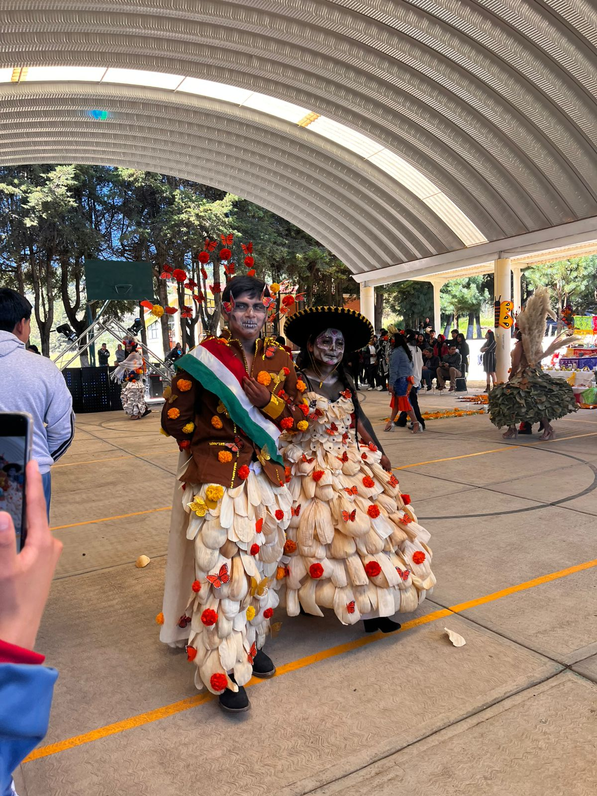

Rodrigo Fransisco – Grupo 503
Agustín de Iturbide
Agustín de Iturbide fue un militar y político mexicano, figura clave en la independencia de México. Nació el 27 de septiembre de 1783 en Valladolid (hoy Morelia) y lideró el Ejército Trigarante que logró la emancipación del país en 1821. Fue proclamado emperador de México en 1822 bajo el título de Agustín I, aunque su mandato fue breve. En 1823 abdicó y al año siguiente fue fusilado. Su legado permanece como símbolo de la lucha por la soberanía nacional.
Histórico / Independencia de México / Emperador